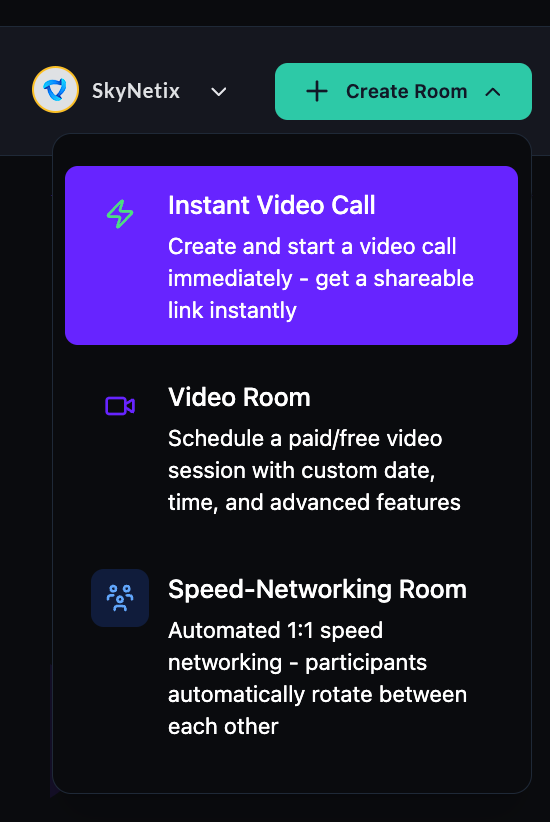
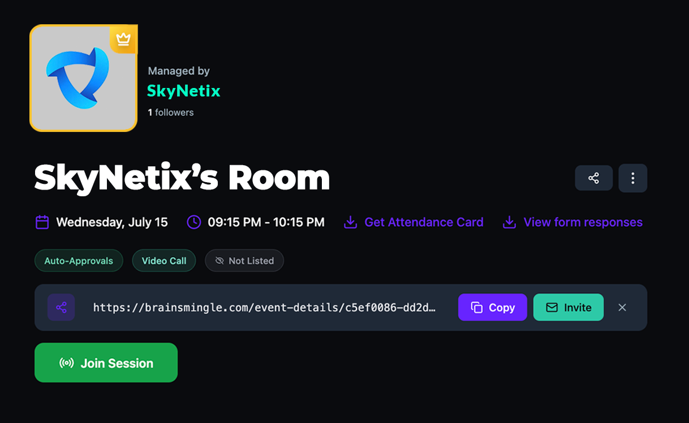

Start an instant drop-in call
Instant drop-in calls are unscheduled video calls that start immediately — no date, no booking, no registration. Use them for quick team check-ins, impromptu office hours, or ad-hoc member conversations.
Before you get started
- You must have an Admin, Moderator, or Expert role to start instant calls.
- Instant calls are not listed on the sessions page. Members can only join via a direct link shared by the host.
Start an instant call
- From the top of your admin dashboard, click Create Room.
- Select Instant Video Call.

- The call is created instantly and the room page opens.
Share the call link
- On the room page, locate the share bar below the room title.
- Click Copy to copy the room link to your clipboard, or click Invite to send the link via email directly from BrainsMingle.
- Share the link with participants via direct message, email, or your community.
- Click Join Session to enter the call as the host.

Please note: Instant calls are not recorded by default. To record, click the Record button in the call toolbar once the session is live. See Record a session.
Tip: Instant calls work well for quick 1-on-1 syncs or small group huddles. For sessions with more than 10 participants or sessions that need scheduling, use Create and schedule a live session instead.